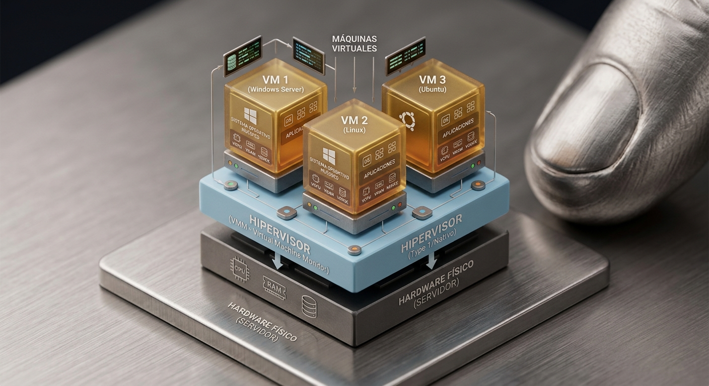

Hypervisores
Un hipervisor es un kernel -o núcleo de sistema operativo, especialmente diseñado para alojar otros sistemas operativos. strictamente hablando, el hipervisor se compone de tres elementos principales.
El hipervisor, también llamado monitor de maquinas vituales.
El kernel modificado, o dom0.
Utilidades y aplicaciones, para trabajar con los supuestos sistemas operativos o máquinas virtuales, domU.
Diríamos entonces, que el hipervisor, es una interfase entre los componentes de la máquina -el hardware y, el sistema operativo, en este caso el kernel modificado, referido como dom0; puesto que de éste, partirán todas las comunicaciones.
El kernel, es la parte de software mínima, capaz de proporcionar los mecanismos necesarios con objeto de implementar el sistema operativo. Estos mecanismos incluyen la gestión del espacio de dirección a bajo nivel, gestión de hilos y la comunicación entre procesos(IPC).
Dentro del apartado de utilidades, requeridas para el correcto funcionamiento del hipervisor, se incluirían dependencias tales, como un gestor de arranque operativo, el paquete iproute o un gestor de dispositivos(udev), entre otros.
Hay dos tipos de Hipervisores:

Tipo 1 Este primer tipo, corre directamente sobre el hardware, para controlarlo y administrar los sistemas operativos invitados o supuestos. Es habitualmente utilizado el término bare metal [1] -del inglés, para referirse a ellos.
Tipo 2 Un sistema operativo invitado [2], corre sobre el sitema anfitrión como proceso, igual que lo haría cualquier otra aplicación.
Note
xen contiene el código requerido para la detección e inicialización de procesadores secundarios, routing de interrupciones y ejecutar la enumeración del bus PCI.”
En los últimos años, el modelo una aplicación por servidor, ha llegado a ser una práctica habitual. La rápida evolución del sistema, su infraestructura, traza una ruta flexible, aunque estrecha, sobre la que el sector empresarial deberá ajustarse para tratar de rentabilizar su inversión.
Posteriores análisis, en cuanto a rendimiento, arrojan datos entorno al 10-15% en el uso efectivo de procesadores. Esto responde a una practica común, que prioriza la seguridad, aislando procesos y sirvicios sobre máquinas en particular.
El rápido desarrollo de procesadores más potentes, ha facilitado un cambio radical, en esta perspectiva conservadora, aunque menos eficiente. El coste en recursos, destinado a favorecer un entorno estable, ha resultado ser un factor determinante.
Tecnologías de virtualización, especialmente diseñadas para capacitar a procesadores de nueva generación, con características aprópiadas, preveen un cambio de enfoque, en lo referente a construcción o composición de un servidor.
Incrementar el rendimiento; manteniendo el coste ajustado, aumentar la utilización de aquellas partes del equipo; que no estaban siendo explotadas, reducir el coste de la gestión administrativa; sin una inversión extra en personal especializado.
“amenudo, es menos complicado manejar la aplicación, si todo está instalado en una sóla computadora.”
Estabilidad, asociada a un coste en recursos.
Entorno de producción
Eficacia
Eficiencia, asociada a una degradación del equipo.
Entorno de desarrollo e investigación.
Eficacia
Ver el vaso medio lleno o medio vacío, es una cuestión que más tiene que ver con el intérprete, que con lo interpretado.
Entorno de prueba
Un entorno de prueba, dedicado a testar determinados procesos, etc. supone un incremento en cuanto a eficiencia del sistema, además de reducir los cilcos de ensayo. Permite separar todas aquellas librerías, destinadas a ensayo, del sistema principal.
El verdadero potencial de un entorno de pruba, se consigue a través de un supuesto -o máquina virtual, por que resulta sencillo trasladarlo a otra máquina -hardware, sin tener que volver a configurar el entorno.
En este sentido, una máquina virtual es el entorno idóneo, donde los cambios producidos en el supuesto, no afectarán a otros sistemas máquinas y su configuración. Permite reducir los tiempos de configuración, adaptando código ya en uso.
Son sistemas disponibles bajo demanda, puesto que guarda los datos como si fuese un paquete, o fichero. Facilita la tarea a desarrolladores, para que sus productos lleguen antes al mercado.
Acelerar la entrega de software y sistemas.
Testar la depuración de sistemas
Analizar rendimiento
Reducir el coste y riesgo, de reescribir, portar o integrar aplicaciones existentes, en nuevos sistemas.
entrega de nuevos sistemas sin interferir con otros en uso.
Carga de trabajo
Alta disponibilidad y alto rendimiento Infraestucturas tecnológicas complementarias, destinadas a favorecer, mejorar, fortalecer, la infraestuctura principal. Es el caso de estas dos técnicas complementarias -o de soporte, a la gestión de servidores; habitualmente llevadas a cabo sobre servidores construidos de forma modular.
Alta disponibilidad significa disponer del acceso a un recursro, incluso en condiciones adversas. Por ejemplo, si el recurso fuese un servidor web; significaría poder acceder al servidor web, aún habiéndose producido un error, en el servidor asociado.
Alto rendimiento, es la capacidad de un recurso, para dar servicio continuo, de manera homogénea. Es decir, que podrá cuantificarse el rendimiento de tal recurso, con unos valores promedio, dando como resultado un servicio estable, a la vez que planificado.
Desde una perspectiva de máquina virtual, la alta disponibilidad, se consigue mediante la planificación de servidores alternativos, dispuestos en un estado durmiente. Por ejemplo, en el servidor web aparece un error, deja de funcionar. La alta disponibilidad planifica un recusro alternativo -el servidor web, que es puesto en funcionamiento de forma automatizada, para garantizar la continuidad del servicio.
Si hablamos de cargas de trabajo, es alto rendimiento de lo que en realidad estamos hablando. Una técnica, que permite equalizar, el exceso de trabajo producido en un momento determinado, entre los recursos disponibles.
Esto evita la saturación de determinado recurso, el cuál podría experimentar cierto grado de deterioro, bajo condiciones de intenso trabajo. En el ejemplo de servidor web, no quiere decir que el servidor irá más rápido, sino que no irá más lento.
Un sistema a prueba de fallos, no es lo mismo que un sistema invulnerable. Un sistema invulnerable, guarda más relación con un estado metafísio o religioso, que con un componente de software o hardware.
Características de una configuración tradicional de servidores: 1 a 1 Este principio que hasta día de hoy suponía resultados optimos, debido a la notble mejora en potencia de procesadores, produce un efecto contrario; un derroche en recursos además de una complejidad extra, en cuanto a gestión de los mismos.
Escalar el sistema en este sentido, conlleva aumentar el espació físco ocupado. Un factor determinante, para muchas empras y organizaciones, puesto que verán reducido el espacio disponible, afectando negativamente al capital inmobiliario.
Especialización de los departamentos de IT, atendiendo a razones particulares, en cada servidor. Supone un coste en personal y en equipo dedicado a la gestión de recursos.
…
Un sistema operativo, un servidor - Simplicidad en la gestión, configuración y escalado, tanto de software como hardware. - Aislamiento de aplicaciones. “De producirse una, eventual, caída del sistema, otras aplicaciones no se verán afectadas”.
Características en el “Modelo de virtualización” El modelo de virtualización, responde a una necesidad de modernización, es decir, la adaptación de las necesidades y recursos disponibles, a una realidad cada vez más exigente. La adopción de este modelo, supone un ahorro tanto en recursos físicos de sistema -memoria, cpu, etc, como de personal humano ligado al desempeño de tareas administrativas, o de gestión de servidor.
…
Modelo de rendimiento mejorado. MRM. Múltiples sistemas operativos, un servidor. “Modelo de virtualización”.
Rendimiento del procesador
Puntos que benefician una mejor estrategia de negocio: - Entorno aislado de ejecución - Compartimentalización de servicios, o particionado de servicios.
Estrategias de continuidad en el tiempo.
Portabilidad inherente a los supuestos
Transferencia de cargas de trabajo
Agilidad en los negocios
Infraestructura escalable
Avance tecnológico
Preguntas comunes, observaciones - ¿Por qué no es sobredimensionada la placa con buses en exceso, para evitar el conocido cuello de botella? ¿implica esto un mecanismo de control, alias “semaforo”, relacionando vías de acceso cpu<->-memoria?
Non Uniform Memory Acces, NUMA
ejemplos es aplicaciones
Caché de datos
Ejemplos de máquinas tipo
Prepara un Debian PVM
- Sofisticada naturaleza de sisema
- “Cuando los supuestos son parvirtualizados, no hay BIOS, o gestor de arranque, en el sistema de ficheros del supuesto. Anteriormente fueron provistos, con un kernel externo a la imagen del supuesto. Esto es malo por razones de mantenimiento -los supuesto no podrán actualizar su kernel, sin acceso al dom0. Tampoco tienen la flexibilidad, en términos de opciones arranque, puesto que deberán ser establecidas en el archivo de configuración.”
- pygrub “capacita al dom0, a poder analizar las sentencias de configuración -to parse en GRUB en domU y, extraer su kernel, initrd y parámetros de arranque. Esto permite actualizar el kernel etc. dentro del supuesto, junto al menú GRUB. Utilizar pygrub o su implementación en el dom conocida como pv-grub, es una mejor práctica para arrancar supuestos PVs. En algunos casos pv-grub es argumentalmente, más seguro pero al no estar incluido en Debian no será utilizado …”
En realidad son muy similares a sus contrapartes físicas, los HVM. Físicas por que el tipo HVM, constuirá tanto la máquina -componentes, como el software -OS.
Preparar un Windows HVM - ¿Por qué no podemos utilizar las aplicaciones de Windows en Linux? Por que es un sitema operativo complétamente distinto a Linux. Las librerías -en especial aquellas destinadas a la gestión de gráficos y sonido, son exclusivas de Windows. El código de las librerías en sí -OpenGL, OpenAL, y otras, es el mismo, puesto que son de código abierto, en muchos casos. El problema, es que el compilador genera un binario o ejecutable, completamente distinto.
¿Por qué utilizar el tipo HVM?
como práctica?,
VHD, Virtual Hard Disk
No se comparte “directamente” el hardware de sistema. El SO utiliza sus própios componentes mecánicos virtualizados.
En un mundo perfecto, todas las máquinas deberían ser así. Por que no es necesario contruir una CPU, capaz de trabajar con kernels modificables. Lo único necesario es el virtualizador. Que por otro lado es un denominador común, escojamos cualquiera de los métodos disponibles hasta el momento.
Si el procesador tuviese la suficiente potencia, para que el rendimiento de la VM, no se viese afectada ¿Valdría la pena utilizar los PVs? Lo que nos lleva a imaginar el proceso de cambio, que sufrirán las CPUs en años venideros. Es posible decir -a lo bestia, algo así¿?: Mientras los procesadores no tengan la suficiente potencia, para evitar tener que compartir los recursos físicos, los fabricantes de procesadores seguirán construyendo carcasas con la llamada tecnología de virtualización. O lo que es lo mismo. Dejaran de dar soporte V al procesador, cuando por rendimiento, sea innecesario.
Hay que estudiar las capacidades específicas, en cuanto a virtualización se refiere, -me estoy refiriendo a la misma pero pero no son todas las que están, ni están todas las que son!.
¿puede ser por razones de soporte a dispositivos menos modernos?
rcursos de virtualización (CPU AMD)
Extensiones de virtualización al conjunto de instrucciones x86 Permite que el software cree máquinas virtuales de forma más eficiente de tal forma que múltiples sistemas operativos y sus aplicaciones puedan ejecutarse simultáneamente en la misma computadora.
TLB etiquetado Características del hardware que facilitan un cambio eficiente entre máquinas virtuales para una mayor capacidad de respuesta de las aplicaciones.
Indexación de virtualización rápida (RVI) Ayuda a acelerar el rendimiento de numerosas aplicaciones virtualizadas permitiendo una administración de la memoria de las máquinas virtuales basada en el hardware.
Migración extendida de AMD-V Ayuda al software de virtualización con migraciones en vivo de máquinas virtuales entre todas las generaciones disponibles de procesadores AMD Opteron.
Virtualización de E/S Permite un acceso directo al dispositivo por una máquina virtual, evitando el hipervisor para un mayor rendimiento de la aplicación y un mayor aislamiento de las máquinas virtuales para una mayor integridad y seguridad
Emulación de la interfaz estandar ATA.
La tarjeteta de red Ethernet
Otros dispositivos.
La virtualización de la CPU y el acceso a memoria, a través del*hardware*.
Uso de controladores PV, para mejorar el rendimiento.
Instalación de controladores PV, tras la instalación del supuesto.
Versión modificada de QEMU, para uso con Xen, en versionesXen anteriores.
Crear un LV, un archivo de configuración para domU(WinHVM).
Arrancar desde el DVD, para la instalación de domU(WinHVM).
Definiciones
Emular: es la capacidad de simular o replicar un componente de hardware. Qemu f4, Quick Emulator, es un ejemplo de emulador. Está escrito en lenguaje de programación C y, es un hipervisor hospedado de código libre. Permite que otros sistemas operativos corran sobre él, independientemente del sistema anfitrión y huesped.
Paravirtualización: Se trata de una técnica de virtualización, que no incluye emulación de hardware. Para que esto sea posible, los supuestos deberán ser modificables y hacer uso de hiperllamadas especiales ABI [3], en lugar de utilizar ciertas características propias de la arquitectura.
Mediante esta técnica se consigue mejorar el rendimiento de la máquina(VM), hasta niveles cercanos a un sistema no virtualizado.
Sistema Nativo: proporciona el código para la emulación del hardware, en caso necesario. Por lo que el supuesto, podría ser cualquier sistema operativo sin modificar. Se espera un rendimiento inferior, al obtenido con técnicas de paravirtualización. En determinadas circunstancias, podría ser necesaria la virtualización del procesador.
Virtualización: el proceso de crear algo de forma teórica en lugar de una versión “real” de algo. La definición es compleja en sí misma, sobre todo si hablamos de software, puesto que el software, no es algo tangible, no es un dispositivo.
Capa de virtualización: es una interfase, entre dos componentes. Esta “capa” de virtualización, difiere de un fabricante -o desarrallador a otro. Por ejemplo, Qemu sitúa esta interfase entre el sistema operativo anfitrión y, las aplicaciones. Xen, sitúa la interfase, entre el hardware y, el sistema operativo. Cada solución tiene sus pros y contras. En un escenario perfecto, donde el procesador fuese lo más potente posible, el primer ejemplo sería el idóneo en todo caso. En un escenario con recursos limitados, Xen conseguirá mejor rendimiento.
Virtualizar el kernel: proceso por el que es convertido el kernel, en un hipervisor. Este proceso puede llevarse a cabo mediante la construcción de un nuevo kernel específico para la tarea, o bien cargando software extra -un modulo, con las capacidades y limitaciones oportunas.
VM: máquina virtual -o virtual machine, deppendiendo de donde haya sido situada la capa de virtualización, el gestor o hipervisor, estará integrado en la propia máquina virtual o fuera de la misma, corriendo como núcleo del sistema modificado.
PVM: máquina virtual para-virtualizada. El hipervisor organiza los recursos del sistema -el hardware, premitiendo que el resto de sistemas operativos virtualizados, accedan a los mismos, sin necesisdad de emular el dispositivo. Por ejemplo, Con Xen, el explorador de internet, podrá comunicarse directamente con la tarjeta de red. Con Qemu, el explorador de internet, se comunicará a través de una tarjeta de red emulada. > Es un ejemplo poco realista, tomese únicamente a efectos de entender el concepto.
HVM: máquina virtual hardware. Uso del hipervisor, para virtualizar sistemas operativos sin modificar. Es algo así como crear un ordenador al completo; sistema operativo, maquinaria y todo lo que tenga que tener. Alquilamos una pequeña parte del procesador, para emular el componente mecánico -además del sistema operativo.
VMM: monitor de máquina virtual. El hiperisor, podría decir que “se ejecuta directamente sobre el hardware”, aunque es preferible decir que “se comunica directmente con el hardware”; independientemente de como el humano, interprete la intrínsica ambiguiedad de su própia naturaleza.
Host: anfitrión.
Dominio: domain en inglés. Término utilizado alternativamente, junto a supuesto -o máquina virtual.
dom0: es un kernel modificado y, el primer dominio iniciado por Xen durante el arranque. Es en esencia el sistema operativo “anfitrión”, junto a las aplicaciones y herramientas administrativas, necesarias para la gestión de las máquinas virtuales. También llamado servicio de cónsola.
domU: es un dominio sin privilegios de acceso al hardware. Deberá correr un controlador de dispositivo, para que el hardware multiplexado, sea compartido con otros dominios.
Aplicaciones relacionadas
Xen, Xen Server, VMware Server, VMware Sphere, z/VM, Oracle VM, Sun xVM Server, Virtual Server, VMware ESX Server, VMware Fusion, Hyper-V, Qemu.
Lenguajes de programación
C++ fue diseñado como extensión al lenguaje de programación C, para que sistemas y aplicaciones dispusisen de las caractterísticas própias de un lenguaje orientado a objetos.
Java, es un lenguaje de programación de propuesta general, basado en clases, orientado a objetos y, diseñado para minimizar la implementación de dependencias.
VM
Una máquina virtual Java(JVM), permite a una computador lanzar programas Java, así como también otros programas escritos en distintos lenguajes, resultando el ejecutable compilado en código de bit Java.
Referencias y agradecimientos
RVI, Rapid Virtualization Indexing Benchmark, prueba de rendimiento/funcionamiento? ATS, Address Transalition Service sr-IOV, Single-Root IOV mr-IOV, Multi-Root IOV gc, Global Catalog hav, hardware-assisted virtualization HBA, Hardware Bus Adapters
Hypervisor wikipedia.
Qemu wikipedia
Xen wikipedia
Wiki XenProject XenProject
Microkernel wikipedia
Administración Avanzada de sistemas informáticos Editorial Ra-Ma® por:
Julio Gómez López, Francisco Gil Montoya, Eugenio Sánchez Villar, Francisco Mendez Cirera